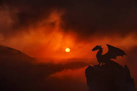
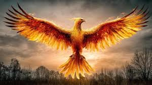
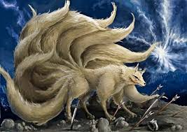

Dragon
Dragons are symbols of power and wisdom in many fantasy worlds.
Exploring legendary creatures from fantasy worlds and folklore.

Dragons are among the most iconic fantasy creatures. They are often depicted as powerful beings capable of flight, immense strength, and breathing fire.
In many fantasy stories, dragons guard treasure hoards and ancient secrets. Some are portrayed as wise and noble creatures, while others serve as dangerous villains that heroes must overcome.

The phoenix is a mythical bird associated with rebirth and renewal. Legends describe it rising from its own ashes after being consumed by flames.
Because of this cycle of death and rebirth, the phoenix has become a symbol of hope, perseverance, and new beginnings. It appears in myths and stories from several cultures around the world.

Kitsunes are magical fox spirits from Japanese folklore. They are known for their intelligence, magical abilities, and shape-shifting powers.
According to legend, kitsunes grow stronger and wiser as they age. Many stories describe them as tricksters, while others portray them as loyal guardians who protect people from danger.
Dragons are symbols of power and wisdom in many fantasy worlds.
Phoenixes represent rebirth, hope, and renewal.
Kitsunes are magical fox spirits known for clever tricks and illusions.
Learn more about mythology through Encyclopedia Britannica's mythology resource .